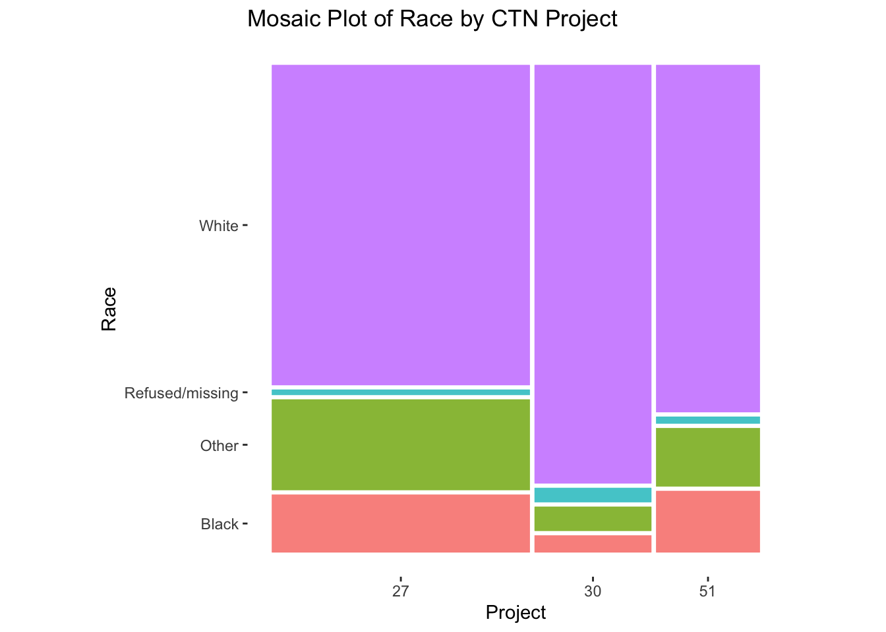
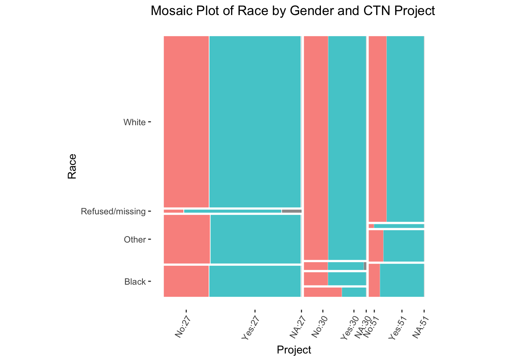
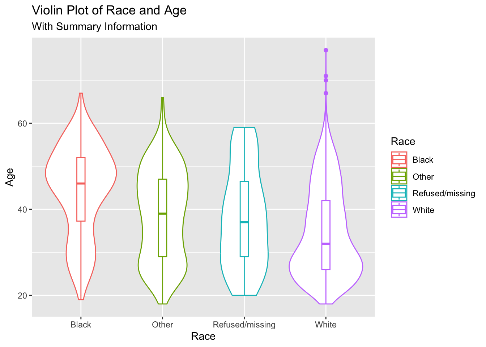

# Installing Required Packages
# install.packages("public.ctn0094data")
# install.packages("tidyverse")
# install.packages("ggmosaic")
# Loading Required Packages
library(public.ctn0094data)
library(tidyverse)
library(ggmosaic)Mosaic & Box/Violin Plots
1 Packages for this Lesson
2 Introduction to Mosaic and Box/Violin Plots
Mosaic, box, and violin plots are useful for visualizing summary statistics.
A mosaic plot is a special type of stacked bar chart used for two or more categorical variables. The width of the columns is proportional to the number of observations in each level of the variable plotted on the horizontal, or x-axis. The vertical length of the bars is proportional to the number of observations in the second variable within each level of the first variable.
Box and violin plots are used for continuous variables by group. Box plots display six summary measures (the minimum, first quartile (Q1), median, third quartile (Q3), the interquartile range, and maximum). A violin plot illustrates the distribution of numerical data for one or more level of a categorical variable by combining summary statistics and density of each variable. Each curve corresponds to the respective frequency of data points within each region. A box plot is typically overlaid to provide additional information.
3 Data Source and Description
The National Drug Abuse Treatment Clinical Trials Network (CTN) is a means by which medical and specialty treatment providers, treatment researchers, participating patients, and the National Institute on Drug Abuse cooperatively develop, validate, refine, and deliver new treatment options to patients. The CTN 094 demographics and everybody data sets from the {public.ctn0094data} package were utilized for the following visualizations. CTN 094 is a comprehensive, harmonized and normalized database of treatment data from CTN_0027, CTN_0030, and CTN_0051, where experiences of individuals with opioid use disorder (OUD) who seek care are described.
4 Cleaning the Data to Create a Model Data Frame
The demographics and everybody data sets within the {public.ctn0094data} package were joined by ID (who variable). Race, age, is_male (gender), and project were selected features for the following visualizations.
# Creating model data frame to include age, race, project, and is_male
# from demographics and everybody data sets. Joined by subject ID (who)
demographics_df <- demographics %>%
left_join(everybody, by = "who") %>%
select(age, race, project, is_male)5 Assumptions with Plots
In mosaic plots, two categorical variables are plotted along the horizontal (x) and vertical (y) axis. Each combination of categories forms a rectangle or tile within the plot.
In box and violin plots, a categorical variable is plotted along the horizontal or x-axis, while a continuous variable is plotted along the vertical or y-axis. Violin plots can be limiting if symmetry, skew, or other shape and variability characteristics are different between groups because precise comparison cannot be easily interpreted between density curves. For this reason, violin plots are typically rendered with another overlaid chart type, like box plot quartiles.
6 Code to Run Mosaic & Box/Violin Plots & output
6.1 Mosaic Plots
In order to create a Mosaic plot, you must specify what data object you will be using within the ggplot() function. Then you will set aesthetic mapping options within the following geometric object layer: geom_mosaic().
In geom_mosaic(), the following aesthetics can be specified:
weight:a weighting variable.x:categorical variable for the x-axis.- Specified as
x = product(var1, var2, ...) - The
product()function is used to extract the values from the categorical variable specified.
- Specified as
alpha:a variable specifying transparency.- If the variable is not called in
x:, thenalpha:will be added in the first position.
- If the variable is not called in
fill:a variable specifying fill color.- If the variable is not called in
x:, thenfill:will be added after the optionalalpha:variable.
- If the variable is not called in
conds:a variable specifying conditions.- Specified as
conds = product(var1, var2, ...)
- Specified as
The ordering of the variables is vital as the product plot is created hierarchically.
6.1.1 Basic Mosaic Plot
In the following example of a basic mosaic plot, we visualize the distribution of Race among CTN Projects 27, 30, and 51.
# Basic Mosaic Plot
mosaic_basic <- demographics_df %>%
ggplot() +
geom_mosaic(
aes(
# geom_mosaic() does not have one-to-one mapping between a variable and the x-
# or y-axis. So you must use the product() function when assigning a variable
# to the x-axis to account for the variable number of variables.
x = product(project),
fill = race
)
) +
labs(
y = "Race",
x = "Project",
title = "Mosaic Plot of Race by CTN Project") +
# Specifies default `geom_mosaic` aesthetics, e.g white panel background,
# removes grid lines, adjusts widths and heights of rows and columns to
# reflect frequencies
theme_mosaic() +
# Removes legend illustrating Race and respective fill colors
theme(legend.position = "None")
mosaic_basic
6.1.2 More Advanced Mosaic Plot
In a more advanced version of a mosaic plot, we can visualize more than 2 categorical variables. The following example utilizes race, project, and ethnicity among CTN Projects 27, 30, and 51.
# Advanced Mosaic Plot
mosaic_advanced <- demographics_df %>%
ggplot() +
geom_mosaic(
aes(
x = product(race, project),
fill = is_male
)
) +
labs(
y = "Race",
x = "Project",
title = "Mosaic Plot of Race by Gender and CTN Project"
) +
theme_mosaic() +
# Adjust axis tick labels to 60 degrees and justification to the right
# with hjust (horizontal justification) and vjust (vertical justification)
theme(axis.text.x = element_text(angle = 60, hjust = 1, vjust = 1)) +
theme(legend.position = "None")
mosaic_advanced
6.2 Box Plot
In order to create a box plot, you must specify what data object you will be using within the ggplot() function. Then you will set aesthetic mapping options within the aes() or aesthetic layer. The geom_boxplot() layer specifies the box plot.
The following aesthetics are understood by geom_boxplot():
xory: Specifies the categorical variable along the x- or y-axis.lowerorxlower: Specifies the 25th percentile/first quartile.upperorxupper: Specifies the 75th percentile/third quartile.middleorxmiddle: Specifies the 50th percentile/second quartile/median.yminorxmin: Specifies the y or x minimum for the plot.ymaxorxmax: Specifies the y or x maximum for the plot.alpha: Specifies a variable to determine transparency.color: Assigns an outline color to respective levels of a specified categorical variable.fill: Assigns a fill color to respective levels of a specified categorical variable.group: Partitions data by a discrete variable when no other grouping variable is specified, or grouping is incorrectly defaulted by R.linetype: Specifies line type of box plot.linewidth: Specifies line width of box plot.shape: Specifies the shape of the (outlier) points.size: Specifies the size of the points and text.weight: Specifies a weight variable.
# Box Plot
box_basic <- demographics_df %>%
ggplot() +
aes(x = race, y = age, color = race) +
labs(
x = "Race",
y = "Age",
title = "Box Plot of Race and Age",
color = "Race"
) +
# Using width to adjust the width of the boxes
geom_boxplot(width = 0.5) +
theme(legend.position = "None")
box_basic
6.3 Violin Plot
In order to create a Violin plot, you must specify what data object you will be using within the ggplot() function. Then you will set aesthetic mapping options within the aes() or aesthetic layer. The geom_violin() layer specifies the violin plot. An additional call for geom_boxplot() will overlay box quartiles on the violin plot.
The following aesthetics are understood by geom_violin():
x: Specifies the categorical variable along the x-axis.y: Specifies the continuous variable along the y-axis.alpha: Specifies a variable to determine transparency.color: Assigns an outline color to respective levels of a specified categorical variable.fill: Assigns a fill color to respective levels of a specified categorical variable.group: Partitions data by a discrete variable when no other grouping variable is specified, or grouping is incorrectly defaulted by R.linetype: Specifies line type of violin plot.linewidth: Specifies line width of violin plot.weight: Specifies a weight variable.
# Violin Plot
violin_basic <- demographics_df %>%
ggplot() +
aes(x = race, y = age, color = race) +
labs(
x = "Race",
y = "Age",
title = "Violin Plot of Race and Age",
subtitle = "With Summary Information",
color = "Race"
) +
geom_violin() +
geom_boxplot(width = 0.1) +
theme(legend.position = "None")
violin_basic 
7 Brief Interpretation
7.1 Mosaic Plot
- Compared to Project 27 and Project 51, Project 30 had the highest proportion of participants who indicated that their race is ‘White’.
- Compared to Project 30 and Project 51, Project 27 had the highest proportion of participants who indicated that their race is ‘Other’.
- Compared to Project 27 and Project 51, Project 30 has the lowest proportion of participants who indicated that their race is ‘Other’.
7.2 Box Plot
- Participants who indicated that their race is ‘Black’ exhibited the highest median age of around 45 years old
- Participants who indicated that their race is ‘White’ exhibited the lowest median age at approximately 31 years old.
7.3 Violin Plot
- Participants who indicated that their race is ‘White’ exhibited peak density around mid-20s compared to those who indicated that their race is ‘Black’, where peak density is exhibited around late-40s.
- Participants who indicated that their race is ‘White’ had the lowest median age at approximately 31 years old, where participants who indicated that their race is ‘Black’ had the highest median age at approximately 45 years old.